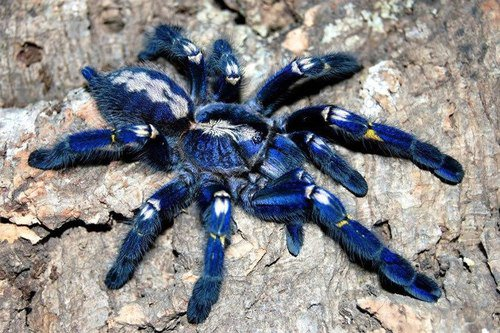

이름 그대로 발가락이 분홍색이라는 뜻으로, 중남미 일대에 서식하는 타란튤라중 Avicularia 속에 속하는 거미들의 총칭.
나무껍질 틈새나 잎사귀를 엮어 집을 짓고 산다. 여타 나무위성종에 비해 나무의 윗줄기 혹은 꼭대기 부근을 선호하는 경향이 강하다.
매우 온순한 성격으로 위협을 느끼면 맞서지 않고 도주하는데, 그 속도가 매우 빠르다. 막다른 곳에 몰리면 다리를 쭉 펼치고 활강하듯 뛰어내린다.
아마존강을 여행하다보면 이렇게 떨어져서 물 위에 둥둥 떠있는 타란튤라를 때때로 관찰할 수 있다.
방수성 털과 표면장력 덕분에 가라앉지 않고 휘적휘적 움직여 강둑에 도달한다.
또한 달아나는 도중에 적에게 가시성 털 대신 배설물을 발사하기도 하는데, 약 0.5~1m정도의 사정거리를 가진다고(...)
